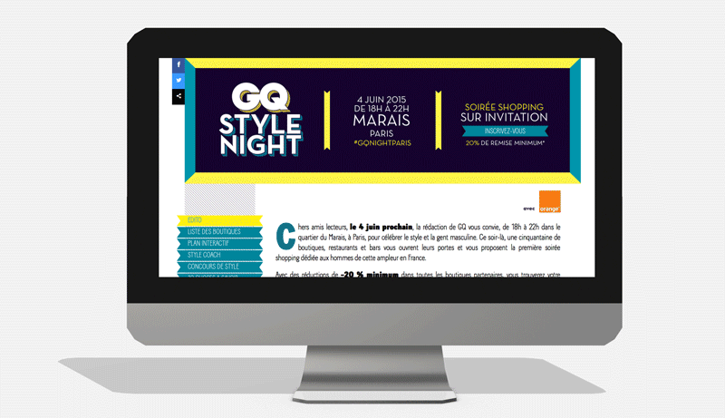
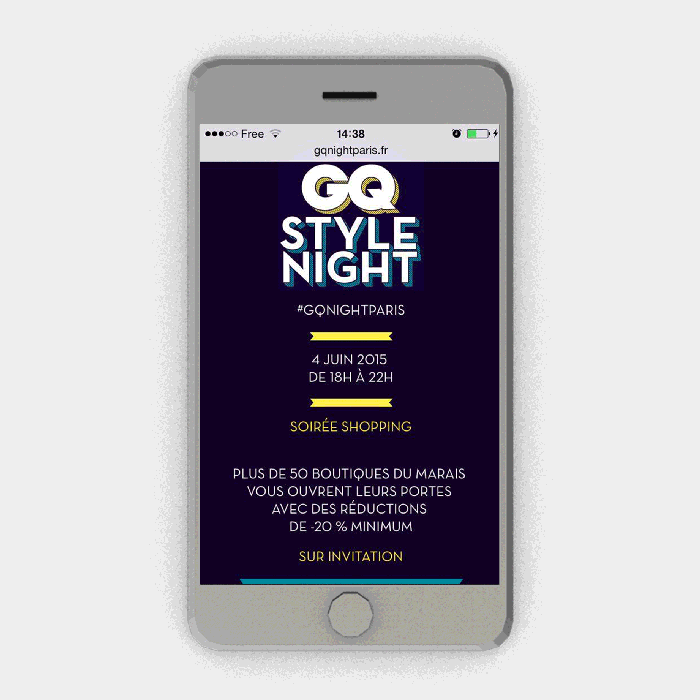

GQ FASHION NIGHT STYLE
La rédaction de GQ conviait pour la première fois ses lecteurs le 4 juin dernier dans le quartier du Marais, à Paris, pour célébrer le style et la gent masculine. Ce soir-là, une cinquantaine de boutiques, restaurants et bars vous ouvraient leurs portes et vous proposaient la première soirée shopping dédiée aux hommes de cette ampleur en France.

SITE DESKTOP
Le Mikmak Studio a développé un site évènementiel permettant de découvrir l’univers et les marques de la soirée.
Nous avons développé une carte intéractive avec géolocalisation permettant de situer les boutiques partenaires, découvrir les avantages et les produits proposés.Ce site était une véritable plateforme informative avant et pendant la soirée.
- 10 067visiteurs uniques
- 8 662sessions
- 11 650 pages vues
- 3:32 mins de temps moyen passé

Le site mobile
Nous avons développé en parallèle du site desktop, une version mobile dédiée.Cette version reprend les principales fonctionnalités avec une fonction supplémentaire de prise de photos directement partagée sur les réseaux sociaux.
Les visiteurs du site mobile représentent chez GQ plus de 50%.
- 26JOURS DE DÉVELOPPEMENT
- 58boutiques partenaires à intégrer
- + de 100produits présentés